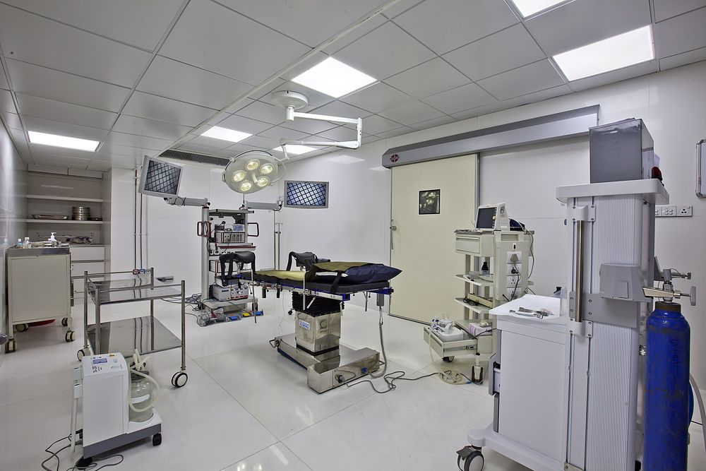
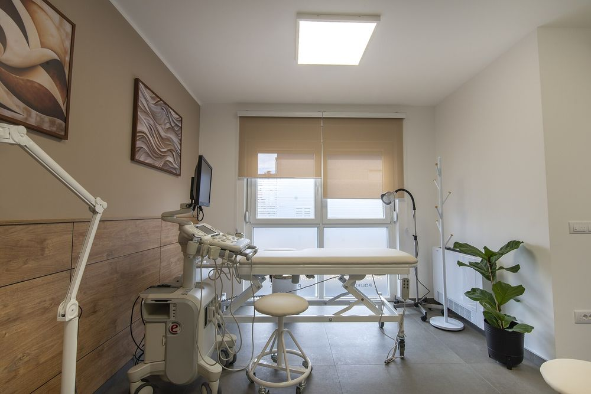
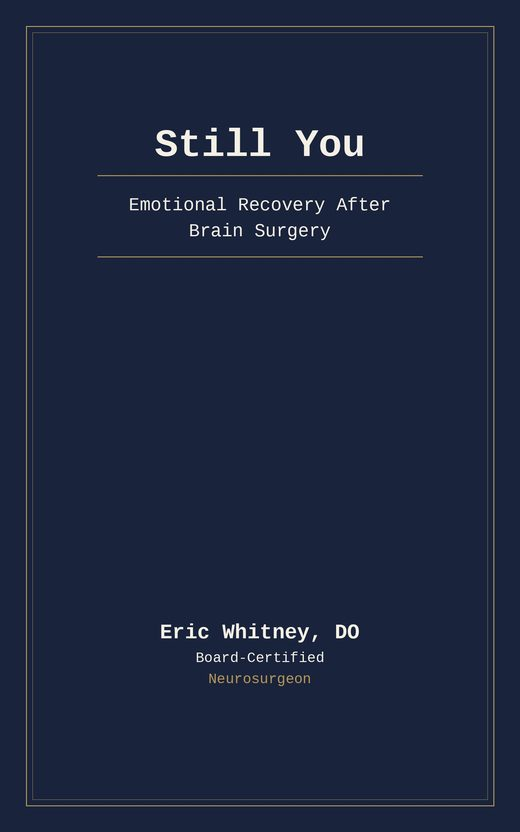
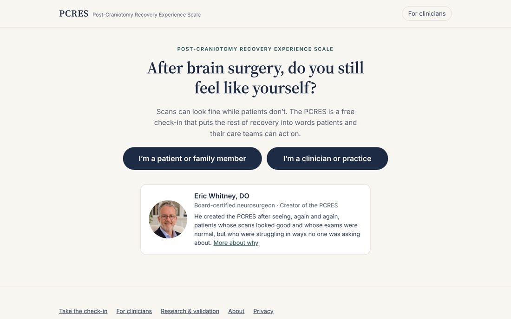
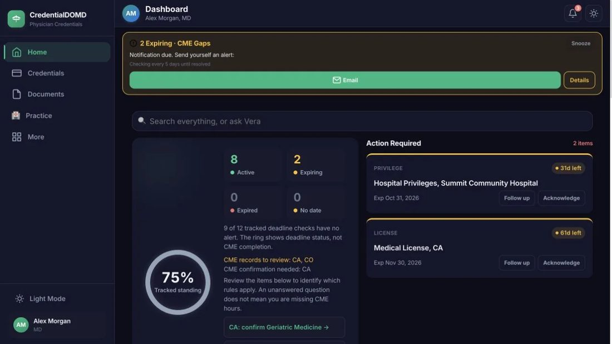
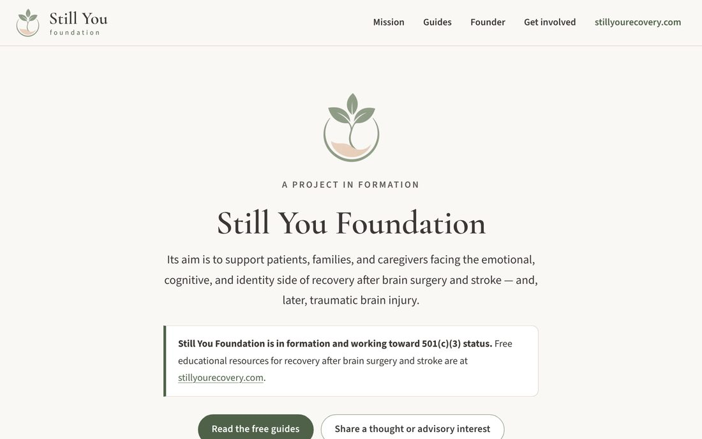
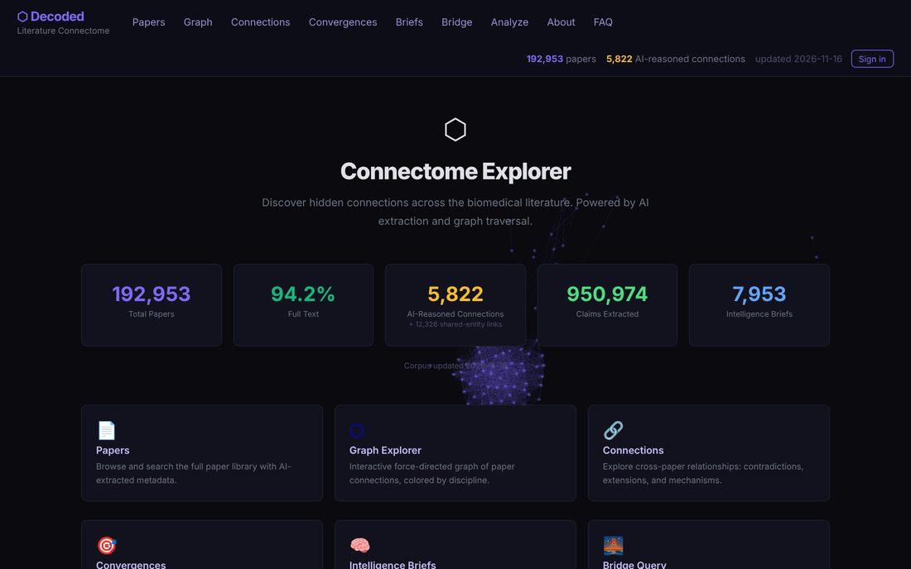
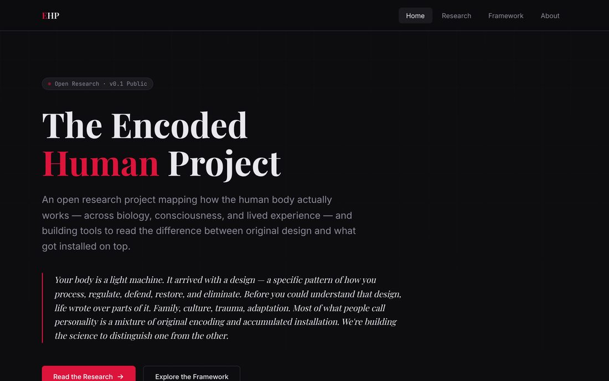

Eric Whitney, DO
I'm a board-certified neurosurgeon in Southern California's Inland Empire and Coachella Valley. I also study consciousness and build tools for patients and clinicians.
I operate on the organ of consciousness for a living. That work has made me obsessed with a question surgery alone can't answer: what is it that we lose when the lights go out, and what does it tell us about what we are when they're on?
Neurosurgery, close to home
I practice with Arrowhead Neurosurgical Medical Group. My clinical work spans the full spectrum of neurosurgery.
Clinical focus
- Trauma
- Spine
- Cerebrovascular disease
- Neuro-oncology
- Skull base [confirm]
Hospital affiliations [confirm]
- Eisenhower Health
- Arrowhead Regional Medical Center
- Riverside University Health System
- Desert Regional Medical Center




Where neurosurgery meets consciousness
My research sits at the boundary between clinical neurosurgery and the science of consciousness.
- Published in Cureus
The Composite Homeostatic Wave
A soliton-based framework for understanding consciousness loss and systemic pathology in aneurysmal subarachnoid hemorrhage.
Read the paper on Cureus - Undergoing COSMIN validation
Pre-CERS and PCRES
Two free, open screening instruments for the emotional side of brain surgery that tools like the PHQ-9 and GAD-7 miss.
See the instruments at pcres.org - Published review
Music and binaural beats
How music, healing frequencies and binaural beats may help after traumatic brain injury and stroke.
Cureus, 2026. Cited below.
My published and ongoing research also covers traumatic brain injury outcomes and cerebral aneurysm management.
Selected publications (7)
- The Composite Homeostatic Wave: A Soliton-Based Framework for Understanding Consciousness Loss and Systemic Pathology in Aneurysmal Subarachnoid Hemorrhage. Cureus. Read on Cureus.
- Whitney E, Wang JY, Haslett J, Ramnot A, Siddiqi J. Healing Effects of Music, Healing Frequencies, and Binaural Beats for Traumatic Brain Injury and Stroke: A Review. Cureus. 2026;18(2):e104261.
- Richardson DL, Whitney E. Deep Brain Stimulation: Overview and Applications in the Context of Neuropsychiatric Conditions. Cureus. 2025;17(10):e93661.
- Rice-Canetto TE, Ueno A, Whitney E, et al. A Review of the Current Literature on Cerebral Aneurysms. Cureus. 2025;17(3):e80223.
- Whitney E, Kiessling JW, Reier L, et al. Non-traumatic Spontaneous Paraplegia Secondary to Thoracic Disc Herniations in the Setting of Tobacco Abuse and COVID-19. Cureus. 2022;14(11):e31544.
- Whitney E, Khan YR, Alastra A, et al. Contrast Extravasation Post Thrombectomy in Patients With Acute Cerebral Stroke: A Review. Cureus. 2020;12(9):e10616.
- Whitney E, Mahato D, Odell T, Khan YR, Siddiqi J. The 100-most Cited Articles About Craniectomy and Hemicraniectomy: A Bibliometric Analysis. Cureus. 2019;11(8):e5524.
What I'm building
Each project asks the same thing: how do we read, map and support the whole human being, not just a body on a table?

Still You Recovery
Free guides to the emotional, cognitive and identity changes after brain surgery or stroke, for patients, caregivers and clinicians. No registration and no paywalls.
I wrote the Still You Brain Surgery and Still You Stroke guides. Printed copies are available by on-demand purchase only.

Pre-CERS and PCRES
Free clinical instruments for emotional readiness before craniotomy and recovery after it.
Visit pcres.org
CredentialDOMD
Credential management for DOs, MDs, NPs and PAs: licenses, DEA, board certifications, privileges and CME. I use it for my own.
Visit credentialdomd.com
Still You Foundation
A foundation in formation, working toward 501(c)(3) status, for the emotional side of recovery after brain surgery and stroke.
Visit stillyoufoundation.org
The Decoded Human
An AI-powered literature connectome that links open-access papers by what they say, not only by citation.
Visit thedecodedhuman.com
The Encoded Human Project
An open research initiative on how biological, psychological and consciousness-level patterns interact.
Visit theencodedhumanproject.comThe Neurosurgeon's Notebook
What the operating room teaches you about the mind, and the questions that keep a neurosurgeon up at night.
Read on SubstackANMG CallSync
Multi-site neuroscience on-call scheduling for ANMG's provider network across ARMC, RUHS, RCH and EMC.
No public site. Image is an illustration.
About
Surgeon, researcher and builder. Before any of that, a few other lives.
- Practice
- Arrowhead Neurosurgical Medical Group
- Board certification
- American Osteopathic Board of Surgery in Neurosurgery
- Fellowship
- Skull base surgery, Arrowhead Regional Medical Center [confirm]
- Residency
- Neurosurgery, Arrowhead Regional Medical Center
- Internship
- Desert Regional Medical Center
- Medical school
- Doctor of Osteopathic Medicine, Liberty University College of Osteopathic Medicine
Before medicine [confirm]
- Seven years in Buenos Aires, Argentina, as a missionary and pastor. Fluent in Spanish.
- Founded a software company specializing in online education.
- Natural gas and crude oil trader, market analyst and risk manager in the energy sector.
That non-linear path is part of why I notice the gap between a successful operation and a patient who no longer feels like themselves. I'm a husband and a father of four. My wife, Dr. Paris Whitney, is a longevity and concierge executive medicine physician.
Speaking and media
Invitations are welcome. Here is a bio, an approved portrait and something to read first.

Download the portrait (JPG, 1024 by 1536). Please credit as "Eric Whitney, DO". Photo credit [confirm]

Past talks, podcasts and press are not listed yet. [confirm]
Short bio for hosts
Eric Whitney, DO, is a board-certified neurosurgeon practicing with Arrowhead Neurosurgical Medical Group across Southern California's Inland Empire and Coachella Valley. His research sits at the boundary of clinical neurosurgery and the science of consciousness. He developed Pre-CERS and PCRES, free clinical instruments for the emotional arc of brain surgery that are undergoing formal psychometric validation, and he is the author of the Still You guides to emotional recovery after brain surgery and stroke. He writes The Neurosurgeon's Notebook on Substack.
Contact
Patients and families
Appointments are made through Arrowhead Neurosurgical Medical Group.
Recovering from brain surgery or stroke? The guides at stillyourecovery.com are free.
This site can't book or change appointments. Please don't email medical questions or records. In an emergency, call 911.
Research, speaking and press
For collaborations, invitations and professional inquiries, email me or connect on LinkedIn.
drericwhitney@gmail.com [confirm]